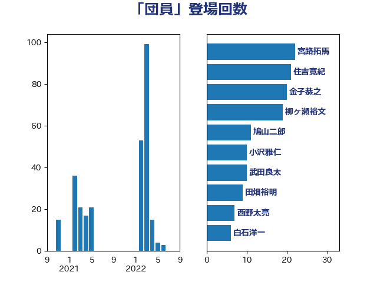

単語「団員」

| 宮路拓馬 | 自由民主党 | 22 回 |
| 住吉寛紀 | 日本維新の会 | 21 回 |
| 金子恭之 | 自由民主党 | 20 回 |
| 柳ヶ瀬裕文 | 日本維新の会 | 19 回 |
| 鳩山二郎 | 自由民主党 | 11 回 |
| 小沢雅仁 | 立憲民主党 | 10 回 |
| 武田良太 | 自由民主党 | 10 回 |
| 田畑裕明 | 自由民主党 | 9 回 |
| 西野太亮 | 自由民主党 | 7 回 |
| 白石洋一 | 立憲民主党 | 6 回 |
| 古川元久 | 国民民主党 | 4 回 |
| 沢田良 | 日本維新の会 | 4 回 |
| 緒方林太郎 | 無所属 | 4 回 |
| 芳賀道也 | 国民民主党 | 4 回 |
| 奥野総一郎 | 立憲民主党 | 3 回 |
| 岩谷良平 | 日本維新の会 | 3 回 |
| 井野俊郎 | 自由民主党 | 2 回 |
| 斉藤鉄夫 | 公明党 | 2 回 |
| 江島潔 | 自由民主党 | 2 回 |
| 田村憲久 | 自由民主党 | 2 回 |
| 近藤和也 | 立憲民主党 | 2 回 |
| 中川宏昌 | 公明党 | 1 回 |
| 古川康 | 自由民主党 | 1 回 |
| 岸真紀子 | 立憲民主党 | 1 回 |
| 滝波宏文 | 自由民主党 | 1 回 |
| 秋野公造 | 公明党 | 1 回 |
| 美延映夫 | 日本維新の会 | 1 回 |
| 赤羽一嘉 | 公明党 | 1 回 |
| 高橋光男 | 公明党 | 1 回 |